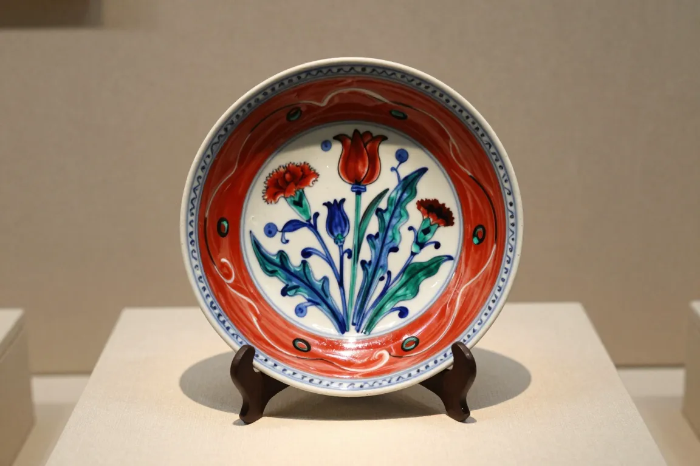

Ottoman court pottery with a white quartz body, a white slip and a clear glaze. Painters used cobalt, turquoise, green and a thick tomato red for tulips, carnations and saz leaves.

Core thesis
A bright garden of flowers can be painted flat and sharp on a white body, and it stays fresh under a clear glass-like glaze.
Design principles
Make the body of ground quartz, glass frit and a little clay, and cover it with a fine white slip.
Paint under a clear alkaline glaze, so that the colours stay bright after the firing.
Use a limited range of colours: cobalt blue, turquoise, then green, and after 1550 a raised tomato red.
Outline the motifs in a dark line and fill them in flat, with no shading.
Draw tulips, carnations, hyacinths, roses and saz leaves, and arrange them in a flowing, balanced garden.
Set an even border of waves and rocks, or a scroll, round the rim of a dish.